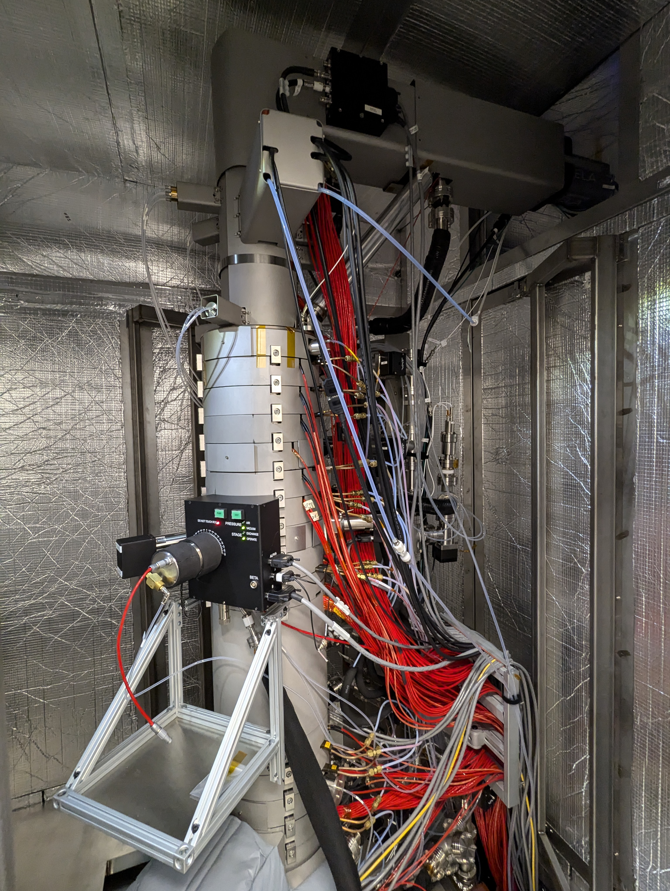
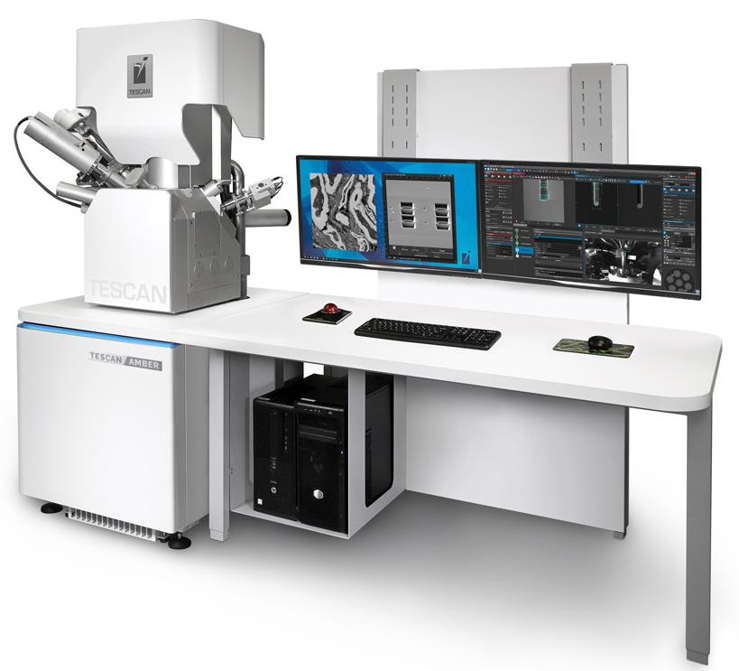

The Quantum Materials Electron Microscopy Centre (QMEMC) lab is located at the Stewart Blusson Quantum Matter Institute and the Department of Physics & Astronomy at the University of British Columbia.
This facility is equipped with an aberration-corrected Bruker Nion HERMES scanning transmission electron microscope (STEM) custom designed to provide atomic resolution imaging, high momentum resolution, and ~5 meV energy resolution electron energy loss spectroscopy (EELS).
The system operates at cryogenic temperatures using a custom side-entry liquid helium cooled sample stage. These capabilities allow probing of the momentum dependence of collective excitations in quantum materials, lattice vibrations, and the spectrum of confined modes in new polaritonic materials.

Bruker Nion HERMES STEM at QMEMC
Strongly correlated materials often exhibit ordered states that break the inherent symmetry of the crystal lattice. These symmetry-breaking states are entwined with unconventional superconductivity or colossal magnetoresistance.
We aim to directly visualize these order parameters at the atomic scale and map their nanoscale fluctuations.
We probe collective electronic and lattice excitations in strongly correlated materials and low-dimensional systems. Collective excitations encode key information about interactions between electrons.
We are especially interested in the momentum dependence of electronic excitations and their behavior in correlated matter.
Our research program aims to apply external fields to materials in situ and unlock the coupling between order parameters and their conjugate fields.
Examples include electric fields and uniaxial strain, allowing direct visualization of domain evolution under external fields.
The Bruker Nion High Energy Resolution Monochromated EELS STEM (HERMES) combines a high-brightness cold field emission gun (CFEG) with a state-of-the-art monochromator.
Capabilities include sub-Ångström atomic resolution imaging and elemental mapping, 5 meV energy resolution for spectroscopy, and high momentum resolution for probing the dispersion of collective excitations such as lattice vibrations and plasmons.

The TESCAN Amber Ga+ focused ion beam (FIB) and scanning electron microscope (SEM) enables preparation of thin TEM samples, microscale device fabrication, and high-resolution ion and electron imaging.
Equipped with a Pt gas injection system, Autoslicer for automatic lamella preparation, EBSD, EDS detector, and a vacuum transfer module.